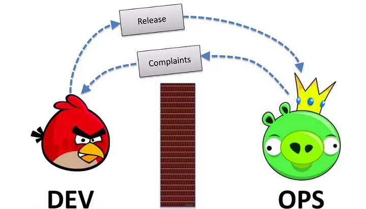

Apa itu DevOps?
DevOps adalah pendekatan dalam pengembangan perangkat lunak yang menggabungkan pengembang perangkat lunak (Development) dan tim operasional (Operations). Tujuannya adalah untuk meningkatkan kolaborasi, mempercepat pengiriman perangkat lunak, serta meningkatkan keandalan dan efisiensi sistem. DevOps memungkinkan otomatisasi proses, integrasi berkelanjutan (CI/CD), dan pendekatan berbasis infrastruktur sebagai kode (IaC).
Mengapa DevOps?
DevOps hadir sebagai solusi atas berbagai tantangan dalam siklus pengembangan perangkat lunak, seperti keterlambatan dalam rilis produk, ketidaksempurnaan sistem, serta kurangnya koordinasi antara pengembang dan tim operasional. Berikut beberapa alasan utama mengapa DevOps penting:
- Kecepatan: Memungkinkan pengiriman fitur dan perbaikan lebih cepat.
- Kolaborasi: Meningkatkan kerja sama antara tim pengembang dan operasional.
- Keandalan: Memastikan sistem lebih stabil dan dapat diperbarui tanpa gangguan besar.
- Efisiensi: Mengotomatiskan tugas-tugas manual yang berulang, menghemat waktu dan biaya.
- Skalabilitas: Mempermudah pengelolaan infrastruktur dengan teknologi cloud dan containerization.
Sejarah DevOps
Konsep DevOps pertama kali muncul pada akhir 2000-an sebagai respons terhadap tantangan dalam pengembangan perangkat lunak tradisional. Beberapa tonggak sejarah DevOps meliputi:
- 2007–2008: Patrick Debois, seorang insinyur IT dari Belgia, mulai mengembangkan konsep yang kemudian disebut DevOps.
- 2009: Konferensi pertama “DevOpsDays” diadakan di Belgia, menandai awal gerakan DevOps.
- 2010–2015: DevOps mulai diadopsi oleh perusahaan besar seperti Facebook, Google, dan Amazon untuk meningkatkan efisiensi dan kecepatan pengembangan.
- Saat Ini: DevOps menjadi standar dalam pengembangan perangkat lunak modern, didukung oleh berbagai alat seperti Docker, Kubernetes, Jenkins, Terraform, dan lainnya.
Arsitektur DevOps
Arsitektur DevOps terdiri dari beberapa komponen utama yang bekerja bersama untuk mendukung pengembangan dan operasional perangkat lunak yang efisien. Beberapa elemen kunci dalam arsitektur DevOps meliputi:
- Continuous Integration (CI): Menggabungkan perubahan kode secara berkala ke dalam repositori utama.
- Continuous Delivery (CD): Mengotomatiskan proses pengiriman perangkat lunak ke lingkungan produksi.
- Infrastructure as Code (IaC): Mengelola dan menyebarkan infrastruktur menggunakan kode.
- Monitoring dan Logging: Mengawasi performa aplikasi dan infrastruktur untuk mendeteksi masalah lebih awal.
- Security (DevSecOps): Mengintegrasikan keamanan ke dalam siklus pengembangan perangkat lunak.
Kelebihan dan Kekurangan DevOps
| Kelebihan |
Kekurangan |
| Kecepatan dalam pengembangan dan rilis perangkat lunak. |
Implementasi awal yang kompleks dan membutuhkan perubahan budaya dalam organisasi. |
| Peningkatan efisiensi dengan otomatisasi. |
Memerlukan investasi besar dalam alat dan infrastruktur. |
| Kolaborasi lebih baik antar tim. |
Keamanan bisa menjadi tantangan jika tidak diterapkan dengan benar. |
| Respon lebih cepat terhadap perubahan pasar. |
Tidak semua perusahaan memiliki keahlian teknis untuk mengadopsi DevOps dengan cepat. |
| Kualitas perangkat lunak yang lebih baik melalui pengujian berkelanjutan. |
|
Kesimpulan
DevOps telah membawa revolusi dalam cara pengembangan dan operasional perangkat lunak dilakukan. Dengan pendekatan yang mengedepankan kolaborasi, otomatisasi, dan efisiensi, DevOps memungkinkan perusahaan untuk merilis perangkat lunak dengan lebih cepat dan andal. Meskipun memiliki tantangan dalam implementasinya, manfaat jangka panjang DevOps sangat signifikan. Dengan memahami konsep, arsitektur, dan kelebihannya, organisasi dapat memanfaatkan DevOps untuk mencapai tujuan bisnis yang lebih baik dan lebih cepat.